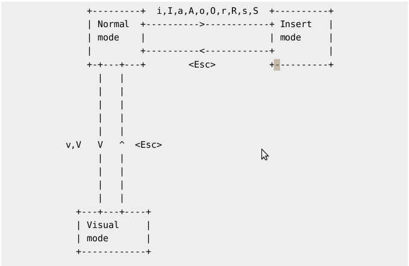

三种模式（记忆！）
三种常见的模式：
- Normal Mode
- Insert Mode
- Visual Mode
Normal mode和Insert Mode的切换有Append，Insert，Replace，Subsitute 记作AIRS，这种记忆方法特别方便，英文单词的意思是空气。
vim在命令模式和输入模式的切换可以通过光标位置和形状的变化观察，以及部分编辑器下方的状态栏会显示。


简单功能
撤销
撤销上一个命令
按键： u（小写）
模式： Normal
撤销最后编辑的一行的所有修改
按键： U（大写）
模式： Normal
光标移动：上下左右
按键： h、j、k、l（小写）
模式： Normal
将光标向对应方向移动一格，h左、j下、k上、l右
光标移动：行首
按键： 0（数字）
模式： Normal
光标移到行首
按键： ^（shift 6）
模式： Normal
光标移到行首的第一个非空白字符的位置
光标移动：行末
按键： 0（数字）
模式： Normal
光标移到行首
按键： $（shift 4）
模式： Normal
将光标移到当前行的行尾
行内移动
按键： f
模式： Normal
f字符，光标移到当前行的下一个匹配的“字符”上
例如输入
fa，则跳转到当前光标所在行的下一个”a”上，如果没有则不进行任何操作
按键： F
模式： Normal
F字符，光标移到当前行的下一个匹配的“字符”上
例如输入
Fb，则跳转到当前光标所在行的下一个”b”上，如果没有则不进行任何操作
替换
替换当前行的第一个匹配
1 | :s/old/new |
替换 old 为 new（以下相同）
替换当前行的所有匹配
1 | :s/old/new/g |
替换两个指定行之间出现的每个匹配串
1 | :#,#s/old/new/g |
其中 #,# 代表的是替换操作的若干行中首尾两行的行号。
替换整个文件中的每个匹配串
1 | %s/old/new/g |
找到整个文件中的每个匹配串，并提示是否替换
1 | :%s/old/new/gc |
复杂功能
Vim内容复制不到其它程序
参考资料：知乎《如何将 Vim 剪贴板里面的东西粘贴到 Vim 之外的地方？》
根据平台不同，要分两种情况。先用下面命令确定你属于哪一种，
1 | vim --version | grep clipboard |
情况一

如果结果里你找到加号开头的+clipboard， 恭喜你，你的vim没问题
- 用
"+y将选中的内容复制到系统剪贴板，效果和ctrl-c一致。 - 用
"+p将剪贴板内容复制到指定位置，也可以用ctrl-v。
情况二
如果找到的是负号开头的-clipboard，说明你的vim不支持系统剪切板。需要先重新安装vim。
Linux系统
1 | sudo apt install vim-gtk |
MacOS
1 | brew install vim |
安装好之后，输入 vim --version | grep clipboard 命令应该已经变成+clipboard 了。
现在可以回到情况一进行复制了。
在当前位置输入文件名
方法一：
- 在需要插入位置进入Insert模式
- 按
CTRL+R，此时光标处变成双引号" - 按
%键，即可直接插入当前文件名
方法二：
- 在需要插入位置进入Insert模式
- 按
CTRL+R，此时光标处变成双引号" - 按
=键，然后输入表达式expand("%:t")如果不需要后缀名，则输入
expand("%:t:r")
插件管理器
vim-plug
- 安装方法
下载plug.vim文件到vim下的autoload目录里面即可
下载方法，可以到Github主页上直接下载；也可以按照Github主页上的命令行执行命令
- 配置方法
在vimrc文件中写入下方代码
1 | call plug#begin('~/.vim/plugged') |
这是一个vim-plug区域，第一行begin开始，第三行end结束。
第一行中的~/.vim/plugged是后续安装插件的目录，可自行更改到需要的位置。
第一和第三行中间用于填入需要安装的插件，可插入多行。
例如我要安装5个插件
1 | " |
插件加入安装的格式 Plug '插件名'，插件名的获取需要到插件的官网上找。
- 插件安装
进入vim
输入:PlugUpgrade可以检查vim-plug有否升级
输入:PlugStatus可查看当前加入到vimrc中插件的安装情况
当我们看到输入有尚未安装的插件，可以执行:PlugInstall命令，开始进行插件的安装。此时需耐心等待，安装完成后会有提示。重启vim即可使用完成安装的插件。
- 插件更新
输入:PlugUpdate 会自动开始更新已列入的插件
- 插件删除
进入vimrc文件，把不需要的插件所在行删除。
然后打开vim，输入:PlugClean会自动删除不在vimrc列表的插件。
插件推荐
vimwiki插件
一个提供笔记统一管理和跳转功能的插件
第一次使用要在vimrc文件中添加设置
1 | " |
这里的D:\WorkSpace\Hexo\blog\source\_posts可根据需要进行更改
设置完成后，我们只需要在vim中输入<Leader>ww（<Leader>默认是\键），即可打开_posts路径下的index.md文件
此文件可以理解为类似Linux根目录的根文件
下面做个例子就能明白了
在此文件中输入以下内容
1 | = 我的vimwiki笔记系统 = |
假如我们一开始要做的笔记是这些（实际是可以逐渐增加的，这里为是演示所以构建了这样一个框架）
现在我们要编辑Python笔记，我们要先选中“Python笔记”的所有字体，然后按Enter键
这样，vimwiki就会自动生成一个Python笔记.md的文件，并进入其中，可以马上编辑并自动保存
在编辑完成后，我们可以按退格键回到index.md。
下次需要进行编辑时，只需要将光标移动到Python笔记中的其中一个字上面，按回车就可以进入。
Vim-markdown插件
这个插件好像没什么用？
让vim提供markdown相关的支持
vimrc中的个人设置
1 | " 插件安装 |
- 命令详解
对齐和补全已存在的r表格*
1 | :TableFormat |
Markdown-preview插件
一款可以在编辑的同时同步预览Markdown生成页面的插件
个人在vimrc中加入了下面的代码，按<leader>r 取代原命令:MarkdownPreview，打开同步预览功能。
有时不小心关闭了预览页面，不能再次打开。是因为上次退出没有使用MarkdownPreviewStop命令关闭，执行一次此命令即可恢复。
1 | " “运行”不同格格式的文件 |
| 所在模式 | 键 | 英文 | 功能 |
|---|---|---|---|
| w | word | 将光标向右移一个单词 | |
| b | back | 将光标向左移一个单词 | |
| e | end | 将光标移到单词尾部 | |
| [Return] | 将光标移到下一行的行首 | ||
| [Spacebar] | 将光标向右移动一位 | ||
| [Backspace] | 将光标向左移动一位 | ||
| gg | go | 文件顶部 | |
| G | go | 文件末尾 | |
| 数字gg（或 数字G） | go | 移动到第 “数字” 行 | |
| zz | 滚动全文，令光标所在行处于屏幕中央 | ||
| zt | z top | 滚动全文，令光标所在行处于屏幕最上一行 | |
| zb | z bottom | 滚动全文，令光标所在行处于屏幕最下一行 | |
| :数字 | 移动到 数字 对应行数 | ||
| H | Head | 屏幕顶部 | |
| M | Middle | 屏幕中间 | |
| L | Low | 屏幕底部 | |
| % | 各种括号的匹配及切换 包括： ( ) 、 [ ] 、 { } | ||
| { | 上一段 | ||
| } | 下一段 | ||
| [Ctrl-e] | 向下滚动一行（光标不动？） | ||
| [Ctrl-y] | 向上滚动一行（光标不动？） | ||
| [Ctrl-d] | down | 将光标向下移到文件尾，通常每次移动12行 | |
| [Ctrl-u] | up | 将光标向上移到文件头，通常每次移动12行 | |
| [Ctrl-f] | forward | 向下翻页（将光标向下移到文件尾，通常每次移动24行） | |
| [Ctrl-b] | back | 向上翻页（将光标向上移到文件头，通常每次移动24行） |
注意：在Insert Mode下避免使用光标键（箭头键）。因为在某些系统中，光标键被解释为普通的ASCII 字符。如果在文本输入模式下使用光标键，那么对应的ASCII字符将被插入文件中。